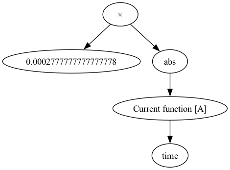
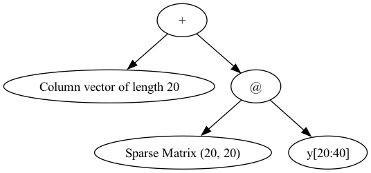
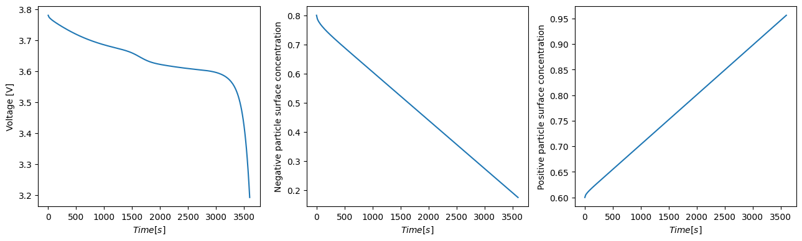

Tip
An interactive online version of this notebook is available, which can be
accessed via

Alternatively, you may download this notebook and run it offline.
Single Particle Model (SPM)#
Model Equations#
The SPM consists of two spherically symmetric diffusion equations: one within a representative negative particle (\(\text{k}=\text{n}\)) and one within a representative positive particle (\(\text{k}=\text{p}\)). In the centre of the particle the standard no-flux condition is imposed. Since the SPM assumes that all particles in an electrode behave in exactly the same way, the flux on the surface of a particle is simply the current \(I\) divided by the thickness of the electrode \(L_{\text{k}}\). The concentration of lithium in electrode \(\text{k}\) is denoted \(c_{\text{k}}\) and the current is denoted by \(I\). The model equations for the SPM are then:
where \(D_{\text{s,k}}\) is the diffusion coefficient in the solid, \(N_{\text{s,k}}\) denotes the flux of lithium ions in the solid particle within the region \(\text{k}\), and \(r_{\text{k}} \in[0,1]\) is the radial coordinate of the particle in electrode \(\text{k}\).
Voltage Expression#
The voltage is obtained from the expression:
with the exchange current densities given by
More details can be found in [3].
Example solving SPM using PyBaMM#
Below we show how to solve the Single Particle Model, using the default geometry, mesh, parameters, discretisation and solver provided with PyBaMM. In this notebook we explicitly handle all the stages of setting up, processing and solving the model in order to explain them in detail. However, it is often simpler in practice to use the Simulation class, which handles many of the stages automatically, as shown here.
First we need to import pybamm, and then change our working directory to the root of the pybamm folder.
[1]:
%pip install "pybamm[plot,cite]" -q # install PyBaMM if it is not installed
import os
import matplotlib.pyplot as plt
import numpy as np
import pybamm
os.chdir(pybamm.__path__[0] + "/..")
Note: you may need to restart the kernel to use updated packages.
We then create an instance of the SPM:
[2]:
model = pybamm.lithium_ion.SPM()
The model object is a subtype of pybamm.BaseModel, and contains all the equations that define this particular model. For example, the rhs dict contained in model has a dictionary mapping variables such as \(c_n\) to the equation representing its rate of change with time (i.e. \(\partial{c_n}/\partial{t}\)). We can see this explicitly by visualising this entry in the rhs dict:
[3]:
variable = list(model.rhs.keys())[1]
equation = list(model.rhs.values())[1]
print("rhs equation for variable '", variable, "' is:")
equation.visualise("spm1.png")
rhs equation for variable ' Throughput capacity [A.h] ' is:

We need a geometry in which to define our model equations. In pybamm this is represented by the pybamm.Geometry class. In this case we use the default geometry object defined by the model
[4]:
geometry = model.default_geometry
This geometry object defines a number of domains, each with its own name, spatial variables and min/max limits (the latter are represented as equations similar to the rhs equation shown above). For instance, the SPM has the following domains:
[5]:
print("SPM domains:")
for i, (k, v) in enumerate(geometry.items()):
print(str(i + 1) + ".", k, "with variables:")
for var, rng in v.items():
if "min" in rng:
print(" -(", rng["min"], ") <=", var, "<= (", rng["max"], ")")
else:
print(var, "=", rng["position"])
SPM domains:
1. negative electrode with variables:
-( 0 ) <= x_n <= ( Negative electrode thickness [m] )
2. separator with variables:
-( Negative electrode thickness [m] ) <= x_s <= ( Negative electrode thickness [m] + Separator thickness [m] )
3. positive electrode with variables:
-( Negative electrode thickness [m] + Separator thickness [m] ) <= x_p <= ( Negative electrode thickness [m] + Separator thickness [m] + Positive electrode thickness [m] )
4. negative particle with variables:
-( 0 ) <= r_n <= ( Negative particle radius [m] )
5. positive particle with variables:
-( 0 ) <= r_p <= ( Positive particle radius [m] )
6. current collector with variables:
z = 1
Both the model equations and the geometry include parameters, such as \(L_p\). We can substitute these symbolic parameters in the model with values by using the pybamm.ParameterValues class, which takes either a python dictionary or CSV file with the mapping between parameter names and values. Rather than create our own instance of pybamm.ParameterValues, we will use the default parameter set included in
the model
[6]:
param = model.default_parameter_values
We can then apply this parameter set to the model and geometry
[7]:
param.process_model(model)
param.process_geometry(geometry)
The next step is to mesh the input geometry. We can do this using the pybamm.Mesh class. This class takes in the geometry of the problem, and also two dictionaries containing the type of mesh to use within each domain of the geometry (i.e. within the positive or negative electrode domains), and the number of mesh points.
The default mesh types and the default number of points to use in each variable for the SPM are:
[8]:
for k, t in model.default_submesh_types.items():
print(k, "is of type", t.__name__)
for var, npts in model.default_var_pts.items():
print(var, "has", npts, "mesh points")
negative electrode is of type Uniform1DSubMesh
separator is of type Uniform1DSubMesh
positive electrode is of type Uniform1DSubMesh
negative particle is of type Uniform1DSubMesh
positive particle is of type Uniform1DSubMesh
negative primary particle is of type Uniform1DSubMesh
positive primary particle is of type Uniform1DSubMesh
negative secondary particle is of type Uniform1DSubMesh
positive secondary particle is of type Uniform1DSubMesh
negative particle size is of type Uniform1DSubMesh
positive particle size is of type Uniform1DSubMesh
current collector is of type SubMesh0D
x_n has 20 mesh points
x_s has 20 mesh points
x_p has 20 mesh points
r_n has 20 mesh points
r_p has 20 mesh points
r_n_prim has 20 mesh points
r_p_prim has 20 mesh points
r_n_sec has 20 mesh points
r_p_sec has 20 mesh points
y has 10 mesh points
z has 10 mesh points
R_n has 30 mesh points
R_p has 30 mesh points
With these defaults, we can then create our mesh of the given geometry:
[9]:
mesh = pybamm.Mesh(geometry, model.default_submesh_types, model.default_var_pts)
The next step is to discretise the model equations using this mesh. We do this using the pybamm.Discretisation class, which takes both the mesh we have already created, and a dictionary of spatial methods to use for each geometry domain. For the case of the SPM, we use the following defaults for the spatial discretisation methods:
[10]:
for k, method in model.default_spatial_methods.items():
print(k, "is discretised using", method.__class__.__name__, "method")
macroscale is discretised using FiniteVolume method
negative particle is discretised using FiniteVolume method
positive particle is discretised using FiniteVolume method
negative primary particle is discretised using FiniteVolume method
positive primary particle is discretised using FiniteVolume method
negative secondary particle is discretised using FiniteVolume method
positive secondary particle is discretised using FiniteVolume method
negative particle size is discretised using FiniteVolume method
positive particle size is discretised using FiniteVolume method
current collector is discretised using ZeroDimensionalSpatialMethod method
We then create the pybamm.Discretisation object, and use this to discretise the model equations
[11]:
disc = pybamm.Discretisation(mesh, model.default_spatial_methods)
disc.process_model(model)
[11]:
<pybamm.models.full_battery_models.lithium_ion.spm.SPM at 0x17eb5f790>
After this stage, all of the variables in model have been discretised into pybamm.StateVector objects, and spatial operators have been replaced by matrix-vector multiplications, ready to be evaluated within a time-stepping algorithm of a given solver. For example, the rhs expression for \(\partial{c_n}/\partial{t}\) that we visualised above is now represented by:
[12]:
model.concatenated_rhs.children[1].visualise("spm2.png")

Now we are ready to run the time-stepping routine to solve the model. Once again we use the default ODE solver.
[13]:
# Solve the model at the given time points (in seconds)
solver = model.default_solver
n = 250
t_eval = np.linspace(0, 3600, n)
print("Solving using", type(solver).__name__, "solver...")
solution = solver.solve(model, t_eval)
print("Finished.")
Solving using CasadiSolver solver...
Finished.
Each model in pybamm has a list of relevant variables defined in the model, for use in visualising the model solution or for comparison with other models. The SPM defines the following variables:
[14]:
print("SPM model variables:")
for v in model.variables.keys():
print("\t-", v)
SPM model variables:
- Time [s]
- Time [min]
- Time [h]
- x [m]
- x_n [m]
- x_s [m]
- x_p [m]
- r_n [m]
- r_p [m]
- Current variable [A]
- Total current density [A.m-2]
- Current [A]
- C-rate
- Discharge capacity [A.h]
- Throughput capacity [A.h]
- Discharge energy [W.h]
- Throughput energy [W.h]
- Porosity
- Negative electrode porosity
- X-averaged negative electrode porosity
- Separator porosity
- X-averaged separator porosity
- Positive electrode porosity
- X-averaged positive electrode porosity
- Porosity change
- Negative electrode porosity change [s-1]
- X-averaged negative electrode porosity change [s-1]
- Separator porosity change [s-1]
- X-averaged separator porosity change [s-1]
- Positive electrode porosity change [s-1]
- X-averaged positive electrode porosity change [s-1]
- Negative electrode interface utilisation variable
- X-averaged negative electrode interface utilisation variable
- Negative electrode interface utilisation
- X-averaged negative electrode interface utilisation
- Positive electrode interface utilisation variable
- X-averaged positive electrode interface utilisation variable
- Positive electrode interface utilisation
- X-averaged positive electrode interface utilisation
- Negative particle crack length [m]
- X-averaged negative particle crack length [m]
- Negative particle cracking rate [m.s-1]
- X-averaged negative particle cracking rate [m.s-1]
- Positive particle crack length [m]
- X-averaged positive particle crack length [m]
- Positive particle cracking rate [m.s-1]
- X-averaged positive particle cracking rate [m.s-1]
- Negative electrode active material volume fraction
- X-averaged negative electrode active material volume fraction
- Negative electrode capacity [A.h]
- Negative particle radius
- Negative particle radius [m]
- X-averaged negative particle radius [m]
- Negative electrode surface area to volume ratio [m-1]
- X-averaged negative electrode surface area to volume ratio [m-1]
- Negative electrode active material volume fraction change [s-1]
- X-averaged negative electrode active material volume fraction change [s-1]
- Loss of lithium due to loss of active material in negative electrode [mol]
- Positive electrode active material volume fraction
- X-averaged positive electrode active material volume fraction
- Positive electrode capacity [A.h]
- Positive particle radius
- Positive particle radius [m]
- X-averaged positive particle radius [m]
- Positive electrode surface area to volume ratio [m-1]
- X-averaged positive electrode surface area to volume ratio [m-1]
- Positive electrode active material volume fraction change [s-1]
- X-averaged positive electrode active material volume fraction change [s-1]
- Loss of lithium due to loss of active material in positive electrode [mol]
- Separator pressure [Pa]
- X-averaged separator pressure [Pa]
- negative electrode transverse volume-averaged velocity [m.s-1]
- X-averaged negative electrode transverse volume-averaged velocity [m.s-1]
- separator transverse volume-averaged velocity [m.s-1]
- X-averaged separator transverse volume-averaged velocity [m.s-1]
- positive electrode transverse volume-averaged velocity [m.s-1]
- X-averaged positive electrode transverse volume-averaged velocity [m.s-1]
- Transverse volume-averaged velocity [m.s-1]
- negative electrode transverse volume-averaged acceleration [m.s-2]
- X-averaged negative electrode transverse volume-averaged acceleration [m.s-2]
- separator transverse volume-averaged acceleration [m.s-2]
- X-averaged separator transverse volume-averaged acceleration [m.s-2]
- positive electrode transverse volume-averaged acceleration [m.s-2]
- X-averaged positive electrode transverse volume-averaged acceleration [m.s-2]
- Transverse volume-averaged acceleration [m.s-2]
- Negative electrode volume-averaged velocity [m.s-1]
- Negative electrode volume-averaged acceleration [m.s-2]
- X-averaged negative electrode volume-averaged acceleration [m.s-2]
- Negative electrode pressure [Pa]
- X-averaged negative electrode pressure [Pa]
- Positive electrode volume-averaged velocity [m.s-1]
- Positive electrode volume-averaged acceleration [m.s-2]
- X-averaged positive electrode volume-averaged acceleration [m.s-2]
- Positive electrode pressure [Pa]
- X-averaged positive electrode pressure [Pa]
- Negative particle stoichiometry
- Negative particle concentration
- Negative particle concentration [mol.m-3]
- X-averaged negative particle concentration
- X-averaged negative particle concentration [mol.m-3]
- R-averaged negative particle concentration
- R-averaged negative particle concentration [mol.m-3]
- Average negative particle concentration
- Average negative particle concentration [mol.m-3]
- Negative particle surface stoichiometry
- Negative particle surface concentration
- Negative particle surface concentration [mol.m-3]
- X-averaged negative particle surface concentration
- X-averaged negative particle surface concentration [mol.m-3]
- Negative electrode extent of lithiation
- X-averaged negative electrode extent of lithiation
- Minimum negative particle concentration
- Maximum negative particle concentration
- Minimum negative particle concentration [mol.m-3]
- Maximum negative particle concentration [mol.m-3]
- Minimum negative particle surface concentration
- Maximum negative particle surface concentration
- Minimum negative particle surface concentration [mol.m-3]
- Maximum negative particle surface concentration [mol.m-3]
- Positive particle stoichiometry
- Positive particle concentration
- Positive particle concentration [mol.m-3]
- X-averaged positive particle concentration
- X-averaged positive particle concentration [mol.m-3]
- R-averaged positive particle concentration
- R-averaged positive particle concentration [mol.m-3]
- Average positive particle concentration
- Average positive particle concentration [mol.m-3]
- Positive particle surface stoichiometry
- Positive particle surface concentration
- Positive particle surface concentration [mol.m-3]
- X-averaged positive particle surface concentration
- X-averaged positive particle surface concentration [mol.m-3]
- Positive electrode extent of lithiation
- X-averaged positive electrode extent of lithiation
- Minimum positive particle concentration
- Maximum positive particle concentration
- Minimum positive particle concentration [mol.m-3]
- Maximum positive particle concentration [mol.m-3]
- Minimum positive particle surface concentration
- Maximum positive particle surface concentration
- Minimum positive particle surface concentration [mol.m-3]
- Maximum positive particle surface concentration [mol.m-3]
- Porosity times concentration [mol.m-3]
- Negative electrode porosity times concentration [mol.m-3]
- Separator porosity times concentration [mol.m-3]
- Positive electrode porosity times concentration [mol.m-3]
- Total lithium in electrolyte [mol]
- Electrolyte flux [mol.m-2.s-1]
- Ambient temperature [K]
- Cell temperature [K]
- Negative current collector temperature [K]
- Positive current collector temperature [K]
- X-averaged cell temperature [K]
- Volume-averaged cell temperature [K]
- Negative electrode temperature [K]
- X-averaged negative electrode temperature [K]
- Separator temperature [K]
- X-averaged separator temperature [K]
- Positive electrode temperature [K]
- X-averaged positive electrode temperature [K]
- Ambient temperature [C]
- Cell temperature [C]
- Negative current collector temperature [C]
- Positive current collector temperature [C]
- X-averaged cell temperature [C]
- Volume-averaged cell temperature [C]
- Negative electrode temperature [C]
- X-averaged negative electrode temperature [C]
- Separator temperature [C]
- X-averaged separator temperature [C]
- Positive electrode temperature [C]
- X-averaged positive electrode temperature [C]
- Negative current collector potential [V]
- Inner SEI thickness [m]
- Outer SEI thickness [m]
- X-averaged inner SEI thickness [m]
- X-averaged outer SEI thickness [m]
- SEI [m]
- Total SEI thickness [m]
- X-averaged SEI thickness [m]
- X-averaged total SEI thickness [m]
- X-averaged negative electrode resistance [Ohm.m2]
- Inner SEI interfacial current density [A.m-2]
- X-averaged inner SEI interfacial current density [A.m-2]
- Outer SEI interfacial current density [A.m-2]
- X-averaged outer SEI interfacial current density [A.m-2]
- SEI interfacial current density [A.m-2]
- X-averaged SEI interfacial current density [A.m-2]
- Inner SEI on cracks thickness [m]
- Outer SEI on cracks thickness [m]
- X-averaged inner SEI on cracks thickness [m]
- X-averaged outer SEI on cracks thickness [m]
- SEI on cracks [m]
- Total SEI on cracks thickness [m]
- X-averaged SEI on cracks thickness [m]
- X-averaged total SEI on cracks thickness [m]
- Inner SEI on cracks interfacial current density [A.m-2]
- X-averaged inner SEI on cracks interfacial current density [A.m-2]
- Outer SEI on cracks interfacial current density [A.m-2]
- X-averaged outer SEI on cracks interfacial current density [A.m-2]
- SEI on cracks interfacial current density [A.m-2]
- X-averaged SEI on cracks interfacial current density [A.m-2]
- Lithium plating concentration [mol.m-3]
- X-averaged lithium plating concentration [mol.m-3]
- Dead lithium concentration [mol.m-3]
- X-averaged dead lithium concentration [mol.m-3]
- Lithium plating thickness [m]
- X-averaged lithium plating thickness [m]
- Dead lithium thickness [m]
- X-averaged dead lithium thickness [m]
- Loss of lithium to lithium plating [mol]
- Loss of capacity to lithium plating [A.h]
- Negative electrode lithium plating reaction overpotential [V]
- X-averaged negative electrode lithium plating reaction overpotential [V]
- Lithium plating interfacial current density [A.m-2]
- X-averaged lithium plating interfacial current density [A.m-2]
- Negative crack surface to volume ratio [m-1]
- Negative electrode roughness ratio
- X-averaged negative electrode roughness ratio
- Positive crack surface to volume ratio [m-1]
- Positive electrode roughness ratio
- X-averaged positive electrode roughness ratio
- Electrolyte transport efficiency
- Negative electrolyte transport efficiency
- X-averaged negative electrolyte transport efficiency
- Separator electrolyte transport efficiency
- X-averaged separator electrolyte transport efficiency
- Positive electrolyte transport efficiency
- X-averaged positive electrolyte transport efficiency
- Electrode transport efficiency
- Negative electrode transport efficiency
- X-averaged negative electrode transport efficiency
- Separator electrode transport efficiency
- X-averaged separator electrode transport efficiency
- Positive electrode transport efficiency
- X-averaged positive electrode transport efficiency
- Separator volume-averaged velocity [m.s-1]
- Separator volume-averaged acceleration [m.s-2]
- X-averaged separator volume-averaged acceleration [m.s-2]
- Volume-averaged velocity [m.s-1]
- Volume-averaged acceleration [m.s-1]
- X-averaged volume-averaged acceleration [m.s-1]
- Pressure [Pa]
- Negative electrode stoichiometry
- Negative electrode volume-averaged concentration
- Negative electrode volume-averaged concentration [mol.m-3]
- Total lithium in primary phase in negative electrode [mol]
- Positive electrode stoichiometry
- Positive electrode volume-averaged concentration
- Positive electrode volume-averaged concentration [mol.m-3]
- Total lithium in primary phase in positive electrode [mol]
- Electrolyte concentration concatenation [mol.m-3]
- Negative electrolyte concentration [mol.m-3]
- X-averaged negative electrolyte concentration [mol.m-3]
- Separator electrolyte concentration [mol.m-3]
- X-averaged separator electrolyte concentration [mol.m-3]
- Positive electrolyte concentration [mol.m-3]
- X-averaged positive electrolyte concentration [mol.m-3]
- Negative electrolyte concentration [Molar]
- X-averaged negative electrolyte concentration [Molar]
- Separator electrolyte concentration [Molar]
- X-averaged separator electrolyte concentration [Molar]
- Positive electrolyte concentration [Molar]
- X-averaged positive electrolyte concentration [Molar]
- Electrolyte concentration [mol.m-3]
- X-averaged electrolyte concentration [mol.m-3]
- Electrolyte concentration [Molar]
- X-averaged electrolyte concentration [Molar]
- Ohmic heating [W.m-3]
- X-averaged Ohmic heating [W.m-3]
- Volume-averaged Ohmic heating [W.m-3]
- Irreversible electrochemical heating [W.m-3]
- X-averaged irreversible electrochemical heating [W.m-3]
- Volume-averaged irreversible electrochemical heating [W.m-3]
- Reversible heating [W.m-3]
- X-averaged reversible heating [W.m-3]
- Volume-averaged reversible heating [W.m-3]
- Total heating [W.m-3]
- X-averaged total heating [W.m-3]
- Volume-averaged total heating [W.m-3]
- Current collector current density [A.m-2]
- Inner SEI concentration [mol.m-3]
- X-averaged inner SEI concentration [mol.m-3]
- Outer SEI concentration [mol.m-3]
- X-averaged outer SEI concentration [mol.m-3]
- SEI concentration [mol.m-3]
- X-averaged SEI concentration [mol.m-3]
- Loss of lithium to SEI [mol]
- Loss of capacity to SEI [A.h]
- X-averaged negative electrode SEI interfacial current density [A.m-2]
- Negative electrode SEI interfacial current density [A.m-2]
- Positive electrode SEI interfacial current density [A.m-2]
- X-averaged positive electrode SEI volumetric interfacial current density [A.m-2]
- Positive electrode SEI volumetric interfacial current density [A.m-3]
- Negative electrode SEI volumetric interfacial current density [A.m-3]
- X-averaged negative electrode SEI volumetric interfacial current density [A.m-3]
- Inner SEI on cracks concentration [mol.m-3]
- X-averaged inner SEI on cracks concentration [mol.m-3]
- Outer SEI on cracks concentration [mol.m-3]
- X-averaged outer SEI on cracks concentration [mol.m-3]
- SEI on cracks concentration [mol.m-3]
- X-averaged SEI on cracks concentration [mol.m-3]
- Loss of lithium to SEI on cracks [mol]
- Loss of capacity to SEI on cracks [A.h]
- X-averaged negative electrode SEI on cracks interfacial current density [A.m-2]
- Negative electrode SEI on cracks interfacial current density [A.m-2]
- Positive electrode SEI on cracks interfacial current density [A.m-2]
- X-averaged positive electrode SEI on cracks volumetric interfacial current density [A.m-2]
- Positive electrode SEI on cracks volumetric interfacial current density [A.m-3]
- Negative electrode SEI on cracks volumetric interfacial current density [A.m-3]
- X-averaged negative electrode SEI on cracks volumetric interfacial current density [A.m-3]
- Negative electrode lithium plating interfacial current density [A.m-2]
- X-averaged negative electrode lithium plating interfacial current density [A.m-2]
- Lithium plating volumetric interfacial current density [A.m-3]
- X-averaged lithium plating volumetric interfacial current density [A.m-3]
- X-averaged positive electrode lithium plating interfacial current density [A.m-2]
- X-averaged positive electrode lithium plating volumetric interfacial current density [A.m-3]
- Positive electrode lithium plating interfacial current density [A.m-2]
- Positive electrode lithium plating volumetric interfacial current density [A.m-3]
- Negative electrode lithium plating volumetric interfacial current density [A.m-3]
- X-averaged negative electrode lithium plating volumetric interfacial current density [A.m-3]
- Negative electrode open-circuit potential [V]
- X-averaged negative electrode open-circuit potential [V]
- Negative electrode bulk open-circuit potential [V]
- Negative particle concentration overpotential [V]
- Negative electrode entropic change [V.K-1]
- X-averaged negative electrode entropic change [V.K-1]
- Positive electrode open-circuit potential [V]
- X-averaged positive electrode open-circuit potential [V]
- Positive electrode bulk open-circuit potential [V]
- Positive particle concentration overpotential [V]
- Positive electrode entropic change [V.K-1]
- X-averaged positive electrode entropic change [V.K-1]
- X-averaged negative electrode total interfacial current density [A.m-2]
- X-averaged negative electrode total volumetric interfacial current density [A.m-3]
- SEI film overpotential [V]
- X-averaged SEI film overpotential [V]
- Negative electrode exchange current density [A.m-2]
- X-averaged negative electrode exchange current density [A.m-2]
- Negative electrode reaction overpotential [V]
- X-averaged negative electrode reaction overpotential [V]
- X-averaged negative electrode surface potential difference [V]
- Negative electrode interfacial current density [A.m-2]
- X-averaged negative electrode interfacial current density [A.m-2]
- Negative electrode volumetric interfacial current density [A.m-3]
- X-averaged negative electrode volumetric interfacial current density [A.m-3]
- X-averaged positive electrode total interfacial current density [A.m-2]
- X-averaged positive electrode total volumetric interfacial current density [A.m-3]
- Positive electrode exchange current density [A.m-2]
- X-averaged positive electrode exchange current density [A.m-2]
- Positive electrode reaction overpotential [V]
- X-averaged positive electrode reaction overpotential [V]
- X-averaged positive electrode surface potential difference [V]
- Positive electrode interfacial current density [A.m-2]
- X-averaged positive electrode interfacial current density [A.m-2]
- Positive electrode volumetric interfacial current density [A.m-3]
- X-averaged positive electrode volumetric interfacial current density [A.m-3]
- Negative particle rhs [mol.m-3.s-1]
- Negative particle bc [mol.m-2]
- Negative particle effective diffusivity [m2.s-1]
- X-averaged negative particle effective diffusivity [m2.s-1]
- Negative particle flux [mol.m-2.s-1]
- X-averaged negative particle flux [mol.m-2.s-1]
- Positive particle rhs [mol.m-3.s-1]
- Positive particle bc [mol.m-2]
- Positive particle effective diffusivity [m2.s-1]
- X-averaged positive particle effective diffusivity [m2.s-1]
- Positive particle flux [mol.m-2.s-1]
- X-averaged positive particle flux [mol.m-2.s-1]
- Negative electrode potential [V]
- X-averaged negative electrode potential [V]
- Negative electrode ohmic losses [V]
- X-averaged negative electrode ohmic losses [V]
- Gradient of negative electrode potential [V.m-1]
- Negative electrode current density [A.m-2]
- Electrolyte potential [V]
- X-averaged electrolyte potential [V]
- X-averaged electrolyte overpotential [V]
- Gradient of electrolyte potential [V.m-1]
- Negative electrolyte potential [V]
- X-averaged negative electrolyte potential [V]
- Gradient of negative electrolyte potential [V.m-1]
- Separator electrolyte potential [V]
- X-averaged separator electrolyte potential [V]
- Gradient of separator electrolyte potential [V.m-1]
- Positive electrolyte potential [V]
- X-averaged positive electrolyte potential [V]
- Gradient of positive electrolyte potential [V.m-1]
- Electrolyte current density [A.m-2]
- Negative electrolyte current density [A.m-2]
- Positive electrolyte current density [A.m-2]
- X-averaged concentration overpotential [V]
- X-averaged electrolyte ohmic losses [V]
- Negative electrode surface potential difference [V]
- Negative electrode surface potential difference at separator interface [V]
- Sum of negative electrode electrolyte reaction source terms [A.m-3]
- Sum of x-averaged negative electrode electrolyte reaction source terms [A.m-3]
- Sum of negative electrode volumetric interfacial current densities [A.m-3]
- Sum of x-averaged negative electrode volumetric interfacial current densities [A.m-3]
- Sum of positive electrode electrolyte reaction source terms [A.m-3]
- Sum of x-averaged positive electrode electrolyte reaction source terms [A.m-3]
- Sum of positive electrode volumetric interfacial current densities [A.m-3]
- Sum of x-averaged positive electrode volumetric interfacial current densities [A.m-3]
- Interfacial current density [A.m-2]
- Exchange current density [A.m-2]
- Sum of volumetric interfacial current densities [A.m-3]
- Sum of electrolyte reaction source terms [A.m-3]
- Positive electrode potential [V]
- X-averaged positive electrode potential [V]
- Positive electrode ohmic losses [V]
- X-averaged positive electrode ohmic losses [V]
- Gradient of positive electrode potential [V.m-1]
- Positive electrode current density [A.m-2]
- Electrode current density [A.m-2]
- Positive current collector potential [V]
- Local voltage [V]
- Terminal voltage [V]
- Voltage [V]
- Contact overpotential [V]
- Positive electrode surface potential difference [V]
- Positive electrode surface potential difference at separator interface [V]
- Surface open-circuit voltage [V]
- Bulk open-circuit voltage [V]
- Particle concentration overpotential [V]
- X-averaged reaction overpotential [V]
- X-averaged solid phase ohmic losses [V]
- Battery open-circuit voltage [V]
- Battery negative electrode bulk open-circuit potential [V]
- Battery positive electrode bulk open-circuit potential [V]
- Battery particle concentration overpotential [V]
- Battery negative particle concentration overpotential [V]
- Battery positive particle concentration overpotential [V]
- X-averaged battery reaction overpotential [V]
- X-averaged battery negative reaction overpotential [V]
- X-averaged battery positive reaction overpotential [V]
- X-averaged battery solid phase ohmic losses [V]
- X-averaged battery negative solid phase ohmic losses [V]
- X-averaged battery positive solid phase ohmic losses [V]
- X-averaged battery electrolyte ohmic losses [V]
- X-averaged battery concentration overpotential [V]
- Battery voltage [V]
- Change in open-circuit voltage [V]
- Local ECM resistance [Ohm]
- Terminal power [W]
- Power [W]
- Resistance [Ohm]
- Total lithium in negative electrode [mol]
- LAM_ne [%]
- Loss of active material in negative electrode [%]
- Total lithium in positive electrode [mol]
- LAM_pe [%]
- Loss of active material in positive electrode [%]
- LLI [%]
- Loss of lithium inventory [%]
- Loss of lithium inventory, including electrolyte [%]
- Total lithium [mol]
- Total lithium in particles [mol]
- Total lithium capacity [A.h]
- Total lithium capacity in particles [A.h]
- Total lithium lost [mol]
- Total lithium lost from particles [mol]
- Total lithium lost from electrolyte [mol]
- Total lithium lost to side reactions [mol]
- Total capacity lost to side reactions [A.h]
To help visualise the results, pybamm provides the pybamm.ProcessedVariable class, which takes the output of a solver and a variable, and allows the user to evaluate the value of that variable at any given time or \(x\) value. These processed variables are automatically created by the solution dictionary.
[15]:
voltage = solution["Voltage [V]"]
c_s_n_surf = solution["Negative particle surface concentration"]
c_s_p_surf = solution["Positive particle surface concentration"]
One we have these variables in hand, we can begin generating plots using a library such as Matplotlib. Below we plot the voltage and surface particle concentrations versus time
[16]:
t = solution["Time [s]"].entries
x = solution["x [m]"].entries[:, 0]
f, (ax1, ax2, ax3) = plt.subplots(1, 3, figsize=(13, 4))
ax1.plot(t, voltage(t))
ax1.set_xlabel(r"$Time [s]$")
ax1.set_ylabel("Voltage [V]")
ax2.plot(
t, c_s_n_surf(t=t, x=x[0])
) # can evaluate at arbitrary x (single representative particle)
ax2.set_xlabel(r"$Time [s]$")
ax2.set_ylabel("Negative particle surface concentration")
ax3.plot(
t, c_s_p_surf(t=t, x=x[-1])
) # can evaluate at arbitrary x (single representative particle)
ax3.set_xlabel(r"$Time [s]$")
ax3.set_ylabel("Positive particle surface concentration")
plt.tight_layout()
plt.show()

Some of the output variables are defined over space as well as time. Once option to visualise these variables is to use the interact slider widget. Below we plot the negative/positive particle concentration over \(r\), using a slider to change the current time point
[17]:
c_s_n = solution["Negative particle concentration"]
c_s_p = solution["Positive particle concentration"]
r_n = solution["r_n [m]"].entries[:, 0]
r_p = solution["r_p [m]"].entries[:, 0]
[18]:
c_s_n = solution["Negative particle concentration"]
c_s_p = solution["Positive particle concentration"]
r_n = solution["r_n [m]"].entries[:, 0, 0]
r_p = solution["r_p [m]"].entries[:, 0, 0]
def plot_concentrations(t):
_, (ax1, ax2) = plt.subplots(1, 2, figsize=(10, 5))
(_plot_c_n,) = ax1.plot(
r_n, c_s_n(r=r_n, t=t, x=x[0])
) # can evaluate at arbitrary x (single representative particle)
(_plot_c_p,) = ax2.plot(
r_p, c_s_p(r=r_p, t=t, x=x[-1])
) # can evaluate at arbitrary x (single representative particle)
ax1.set_ylabel("Negative particle concentration")
ax2.set_ylabel("Positive particle concentration")
ax1.set_xlabel(r"$r_n$ [m]")
ax2.set_xlabel(r"$r_p$ [m]")
ax1.set_ylim(0, 1)
ax2.set_ylim(0, 1)
plt.show()
import ipywidgets as widgets
widgets.interact(
plot_concentrations, t=widgets.FloatSlider(min=0, max=3600, step=10, value=0)
);
The QuickPlot class can be used to plot the common set of useful outputs which should give you a good initial overview of the model. The method Quickplot.dynamic_plot employs the slider widget.
[19]:
quick_plot = pybamm.QuickPlot(solution)
quick_plot.dynamic_plot()
References#
The relevant papers for this notebook are:
[20]:
pybamm.print_citations()
[1] Joel A. E. Andersson, Joris Gillis, Greg Horn, James B. Rawlings, and Moritz Diehl. CasADi – A software framework for nonlinear optimization and optimal control. Mathematical Programming Computation, 11(1):1–36, 2019. doi:10.1007/s12532-018-0139-4.
[2] Charles R. Harris, K. Jarrod Millman, Stéfan J. van der Walt, Ralf Gommers, Pauli Virtanen, David Cournapeau, Eric Wieser, Julian Taylor, Sebastian Berg, Nathaniel J. Smith, and others. Array programming with NumPy. Nature, 585(7825):357–362, 2020. doi:10.1038/s41586-020-2649-2.
[3] Scott G. Marquis, Valentin Sulzer, Robert Timms, Colin P. Please, and S. Jon Chapman. An asymptotic derivation of a single particle model with electrolyte. Journal of The Electrochemical Society, 166(15):A3693–A3706, 2019. doi:10.1149/2.0341915jes.
[4] Valentin Sulzer, Scott G. Marquis, Robert Timms, Martin Robinson, and S. Jon Chapman. Python Battery Mathematical Modelling (PyBaMM). Journal of Open Research Software, 9(1):14, 2021. doi:10.5334/jors.309.